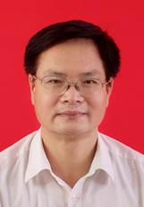

正高级
覃德泽，教授，贺州学院数学与计算机学院党总支书记。1999年毕业于广西师范大学无线电电子学专业、计算机应用方向研究生班（脱产两年），教育部资助的高校青年骨干教师国内访问学者（武汉大学，2008.9-2009.7，脱产）。
主要讲授《计算机网络工程》、《路由协议与概念》、《LAN交换与无线》、《接入WAN》等课程。研究方向为计算机网络安全、计算机网络安全风险评估等。
多年来主持自治区级（省级）项目3项，参与自治区级（省级）项目4项，主持地（厅）级项目5项，参与地（厅）级项目1项；在国际国内刊物、学术会议上发布学术论文30多篇，其中独立完成或第一作者20余篇；主编高校教材2部，参编高校教材1部。
主持完成的《立体化教材建设与推广应用》课题获"十一五" 广西教育科学研究优秀成果二等奖，以第二作者完成的《计算机应用基础学习网（网络版）》课件获得第十一届（2011年）全国多媒体课件大赛高教工科组二等奖。主持完成的《大学计算机基础课程改革与实践》课题获贺州学院第三届（2012年）教学成果一等奖。
现任广西高教学会计算机基础教育专业委员会常务理事，贺州市计算机学会理事长，《贺州学院学报》编委。被评为2005-2007年度贺州市优秀教师，2003-2004年度梧州师专（贺州学院前身）“十佳教师”。
副高级
陈科尹，工学博士，数学与计算机学院物联网工程教研室主任。2014年6月博士毕业于华南农业大学农业电气化与自动化（机器视觉）。研究方向为农业机器人、机器视觉、仿生智能算法等。在国内外学术期刊，共发表学术论文11篇，其中第一作者9篇，EI收录5篇，中文核心收录3篇，科技核心收录4篇，软件著作权1项。主持广西自然科学基金项目1项，广西高校科学技术研究项目（KY2015YB304）1项，主持贺州市科技开发项目1项，主持贺州学院博士科研启动基金项目（HZUBS201403）)1项,并参与国家自然科学基金项目4项，广东省教育部产学研结合重点项目1项。
陶程仁，理学学士，副教授。1986年7月毕业于广西师范大学。研究方向为数据库技术、软件理论与应用。独立完成发表学术、教研论文10篇；主持市、厅级科研项目各1项，参与区级科研项目1项、教育部项目1项，参与区教改项目1项，主持校级教改项目1项，质量工程2项；编著专著1部，主编21世纪规划教材1部。
中级
张波，工学硕士，讲师，软件设计师，双师型教师，软件工程教研室主任，计算机科学与技术教研室主任，广西高校教师优秀共产党员。 毕业于广西师范大学计算机应用技术专业。主要教授《软件工程》、《计算机导论》、《JAVA程序设计》、《Web前端开发》等课程， 2015年取得甲骨文OCP认证。近年来一直指导学生参加大学生创新创业训练项目和各类软件设计大赛，指导学生项目获得2012年、2013年 、2014年国家级大学生创新项目立项，2012年、2014年获得全国软件专业人才设计与创新大赛优秀指导老师。获得2012届、2013届、 2014届、2015届、2016届贺州学院优秀毕业设计指导教师，2011-2012年度贺州学院优秀教师，2011-2012年度贺州学院优秀班主任， 2012-2013年度贺州学院优秀学生工作者，2013年度学风建设工作先进个人，2014年度毕业生就业工作先进个人，2014-2016年度“十佳教师党员”，2016年获得广西高校优秀共产党员等荣誉。
胡元闯，工学硕士，网络工程师，数学与计算机学院网络工程教研室主任。2010年6月硕士毕业于桂林电子科技大学计算机应用技术专业。研究方向为网络协议、模型检查、软件开发的形式化方法、云计算等。在国际刊物、国内核心期刊发表过论文若干。主持和参与过多项省部级以上科研项目，其中广西自然科学基金项目“基于UPPAAL的实时系统模型检测研究”（项目编号：2014GXNSFBA118278）作为主持人现在建设当中。同时还作为负责任人对“云计算安全问题研究”的校级科研项目进行项目建设（项目编号：2014ZC25）。指导过多项大学生创新创业训练项目，获得国家级、自治区级立项。
初级

李剑维，工学硕士，助教，数学与计算机学院软件工程专业教师。2016年1月来校工作。2011年7月硕士于桂林电子科技大学计算机与控制学院计算机应用技术专业（物联网方向）发表论文2篇。2011.2-2014.10在广西壮族自治区政府办公厅工作，主要负责组织规划、协调指导全区政府系统政务信息化建设等；负责政府门户网站的建设运营和管理等；负责政府办公厅信息化建设等。项目经验（负责项目全流程包括需求分析、UML建模、开发管理、测试上线、运维等）；2014.10-2015.8在中国水利电力对外公司厄瓜多尔分公司，主要负责办公室、人事管理、设备采购、大宗材料贸易及清关等工作。2015.8–2015.12在广西海诚贸易有限公司技术部总监负责公司的互联网业务拓展，包括B2C项目、C2C项目等电子商务平台的建设运营和管理。
甘林，管理学硕士，助理实验师，数学与计算机学院实验教学中心的实验教师，2008年7月本科毕业于湖北工业大学计算机科学与技术；2011年6月硕士毕业于南昌大学工商管理专业。研究方向主要为计算机网路，计算机网络安全等。在国内刊物发表文章4篇。第十一届全国多媒体课件大赛一等奖。
双师
张波，工学硕士，讲师，软件设计师，双师型教师，软件工程教研室主任，计算机科学与技术教研室主任，广西高校教师优秀共产党员。 毕业于广西师范大学计算机应用技术专业。主要教授《软件工程》、《计算机导论》、《JAVA程序设计》、《Web前端开发》等课程， 2015年取得甲骨文OCP认证。近年来一直指导学生参加大学生创新创业训练项目和各类软件设计大赛，指导学生项目获得2012年、2013年 、2014年国家级大学生创新项目立项，2012年、2014年获得全国软件专业人才设计与创新大赛优秀指导老师。获得2012届、2013届、 2014届、2015届、2016届贺州学院优秀毕业设计指导教师，2011-2012年度贺州学院优秀教师，2011-2012年度贺州学院优秀班主任， 2012-2013年度贺州学院优秀学生工作者，2013年度学风建设工作先进个人，2014年度毕业生就业工作先进个人，2014-2016年度“十佳教师党员”，2016年获得广西高校优秀共产党员等荣誉。
谭晓东，工学硕士，讲师，双师型教师，数学与计算机学院实验教学中心实验室主任。2008年硕士毕业于东华理工大学计算机应用技术专业，研究方向为算法、网络技术等。在国际国内刊物上发表学术论文数篇，主持院级科研课题2项，参与省部级科研课题4项。近几年曾两次获年度考核优秀等级，2013年获学校评估工作先进个人荣誉称号。